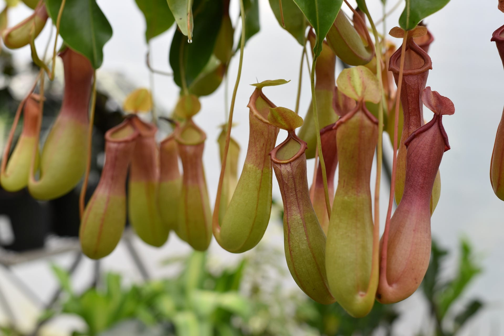

Pitcher Plants
Most plants get the nutrients that they need from soil. Pitcher plants also get nutrients by catching and digesting insects. For this reason they are called carnivorous, or meat-eating, plants. There are several different species, or kinds, of pitcher plant. Some are related to the Venus’s-flytrap, another carnivorous plant. Many types of pitcher plant grow in North and South America, but some species grow in other parts of the world. Pitcher plants have structures shaped like pitchers, bowls, or trumpets. In some types the structures make up the whole of the plant’s leaves. In other types the structures are just part of the leaves. In these types the structures grow at the ends of stringlike parts called tendrils. The purple, or common, pitcher plant has green to reddish leaves and purple-red flowers. The yellow, or trumpet, pitcher plant has green, trumpet-shaped leaves and bright yellow flowers. Most types of pitcher plant catch and digest prey in a similar way. Glands in a plant’s pitcher produce nectar. Nectar is a sweet, sometimes sticky liquid that attracts insects. Once an insect crawls into the pitcher, it falls into a pool of enzymes, or digestive juices. These enzymes dissolve the insect’s soft parts. The plant then absorbs the soft parts through the walls of the pitcher.
Here are some facts about Pitcher Plants!
| Name | Pitcher plants |
| Botanical name | members of the Nepenthaceae and Sarraceniaceae families |
| Kingdom | Plantae |
| Conservation status | Least Concern |
| Environment | Grows in nutrient-deficient soils of the upper montane zone. It typically occurs in open areas of mossy forest amongst ridge-top vegetation. |
| Habitat | All over the world |
| Live Specimens | NA |
| Check out the wikipedia page here! | |